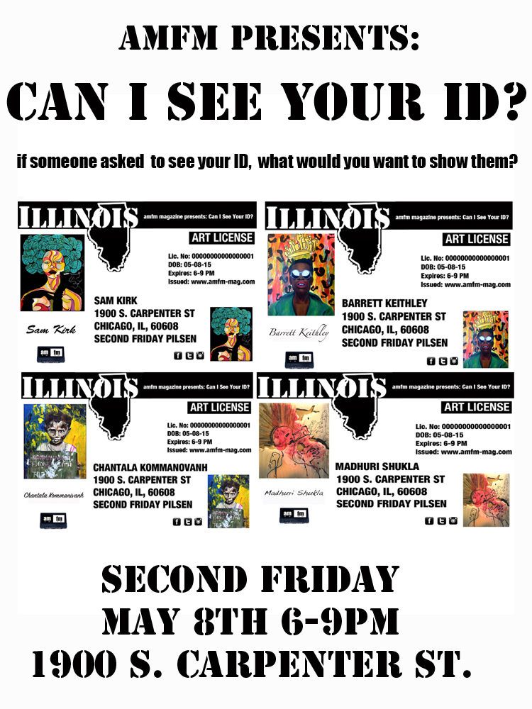

|
SEE PICS HERE

Chromophobia : Fear of color.
In a society that focuses so much on color, that pits blacks and whites against each other, where whiteness is viewed as the standard of beauty and the default, and people of color are viewed as the other, we are a people focused on "color," yet society seems to have a fear of color. These artists do not. They embrace it. Their bodies of work deal with color in some realm, whether it be literal through their use of color in their work, or through an exploration of race and identity when it comes to color. These artists are not afraid to explore dark, or controversial, abstract themes in a colorful way.
This is the first of a series of a free jazz and art events at After Gallery as a collaboration between amfm and My Morning After. The series features local up and coming jazz musicians with an urban flair.
For each show, an artist will take over the space with a solo
exhibition and mural.

Artists were asked to pick a facet of themselves that they felt they wanted to explore, dispel, or that often gets misrepresented. Or they choose to explore multiple facets of their identity representing how they intersect. If someone were to ask if they could see your ID what would you want to show? What do you want people to see, or how do you think people will perceive you based upon what you “tell” or “show” them in showing them your ID?
Can I See Your ID in a way is someone asking you who you are, how you either show
yourself to the world, who you wish to be,
or who the world sees you as.
In conjunction with our feature on Imani Amos's 50 Shots Project, we had a exhibition and music show. The project shows portraits of 50 black men from Chicago who are doing positive things in their community. This series was created to challenge preconceived notions and prejudices about black men in society and continue the conversation about the black lives who are slain and vilified in the social context. Proceeds from the event were donated to
The Black Youth Project.
|
|
|